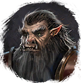
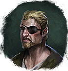

Элемент питания
Предметы / Сырьё
Открыть в интерактивной вики →
| Вес | 1 |
|---|---|
| Цена | 0 |
Описание
Используется для создания  Заряженный элемент питания.
Заряженный элемент питания.
Для получения требуется выполнить задание у Лукас Ландау.
Лукас Ландау.
Можно получить во время различных игровых ивентов, также есть шанс получить за выполнение задания у
Заряженный элемент питания. Для получения требуется выполнить задание у

Трун около складовЛукас Ландау. Можно получить во время различных игровых ивентов, также есть шанс получить за выполнение задания у

Рок Оллон.| Разряженный элемент для пульта. Чтобы зарядить, используй особую печь в Зале управления. |
Где найти
Применение
|
Способы получения
|